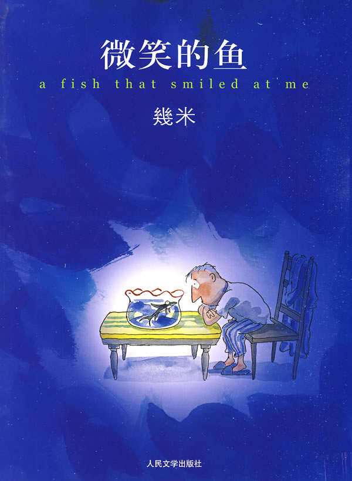

我
你说
是，镜子里的我挡住了我走进去；
还是，我挡住了镜子里的我走出来。
现居ZZ市，目前于S公司做前端开发工作。常用“微笑的魚”作为ID，一个彻头彻尾如假包换的文科生。机缘巧合之下误入歧途，更在C哥，H哥，L哥和L姐的带领下在前端开发的不归路上越走越远。目前工作以React技术栈为主。有一些文科生的小文（装）艺（逼），也有一些工科生的小沉（闷）稳（骚）。
喜欢宅：没有丝毫FreeStyle，活生生一只考拉。
喜欢看书：电子书我是拒绝的，就得看纸质书才有感觉。什么都看，技术、哲学、小说、画册……
喜欢音乐：云音乐ID：山鸟不鸣。什么，不让抖腿？那还怎么写代码……
喜欢美剧：《生活大爆炸》中的谢耳朵对我影响很大；也喜欢《冰与火之歌》，布兰，你到底啥时候放大招？
喜欢新事物：对各种不理解的东西充满好奇，如同一个孩子。
喜欢蜡笔小新：“妈妈，你肥来了，我要吃心点~”，“小新，给你说了多少遍了，要说‘我回来了’，知道吗？”
有点儿耿直，有点儿话痨……
域名
你能猜出来我的域名 YOUI.ME 是什么含义吗？
本博客
日常工作生活经常会有一些心得和收获，无奈年龄变大，记性也不好了，总觉得应该写下来。一来能整理一下思路，也能用作一个和各位同行交流的渠道。
会写一些折腾新东西的收获，也会写一些学习和思考的心得。当然，也会有一些日常吐槽。
欢迎各位常来围观，讲道理，虽然我也不知道我多久才会更新一次~~
微笑的鱼
出自几米1998年出版的画册《微笑的鱼》（见下图）。内容简短温馨。

中年男子遇见一只鱼，对他微笑的鱼，他想拥有她，带她回家，但关在鱼缸里的鱼却让他感到悲伤，中年男子内心深处对自由的渴望，在他终于拥有了这只鱼后再也无法隐藏，他将鱼儿送回海洋，也恍然大悟那其实是迷失已久的另一个自己……
我拥有一只像狗一样忠心、像猫一样贴心、像爱人一样深情的，微笑着的鱼。——出自《微笑的鱼》
其他相关
本博客原则上所有文章不用做任何商业用途，在引用其他版权和智力成果的同时，也会尽量注明出处。如果不慎疏忽，出现不合理言论或侵权行为，请通过以下联系方式联系我，我会及时更正或删除。
- QQ：312857696
- E-Mail：cyberlinkyu@gmail.com
当然，如果有一些日常吐槽言语引起哪位不适，也可以联系我，反正我也不会删除~
没错儿，就是这么任性……😜
愿互联网共享精神之光永远闪耀！